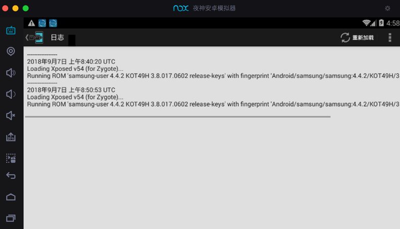

安装XPosed框架
此处介绍Mac中在夜神Nox中安装XPosed框架
此处Nox的Android版本是：4.4.2

需要去安装版本匹配的：
2.7 experimental1的Xposed Installer- 适用于：
Android 4.0.3~Android 4.4 - 安装包：de.robv.android.xposed.installer_v33_36570c.apk
- 来源网站
- 作者
- 下载后
- 适用于：

然后点击左下角的：添加apk文件

会自动打开应用管理器，显示：安装中

安装后会在桌面中看到：Xposed Installer

点击打开：

点击框架
提示你可能会变砖

点击确定，弹框消失：

点击：安装/更新

弹框：超级用户请求，选择：永久记住选择，点击允许

提示：已授予Xposed Installer超级用户权限

弹框确认是否要重启，点击 确定：

然后Nox重启：

重启完毕：

点击再次进去Xposed：

再次重启后，进入框架：
可以看到框架中显示：
- app_process 激活 58 程序自带 58
- XposedBridge.jar 激活 54 程序自带 54

其中已安装了：2.7 experimental1的Xposed Installer

XPosed相关页面
顺带看看其他页面：
设置：

日志：

关于：
心得：不要安装版本不匹配的XPosed
此处Nox的Android版本是：4.4.2
所以只能安装对应的2.7的XPosed
如果不小心安装了3.1.5的XPosed，其只支持Android 5.1：
（此处可以从Nox的应用商店中搜到这个）

安装后是：3.1.5的Xposed Installer

则：和此处Android 4.4.2的Nox是不匹配的，导致后续无法正常使用。
注意：不要轻易升级到新版XPosed
类似的：
当看到系统有提示新版XPosed：

此处不要去升级，否则升级到新版Xposed 5.1.1后，就和此处的Android 4.4.2的Nox不兼容了，无法继续使用了。
心得：遇到键盘无法输入时，记得再重启一次Nox
在Nox中安装Xposed之后，如果遇到键盘无法输入，则：再多重启一次Nox，即可解决：
安装4.42安卓版本XP框架首次重启模拟器会导致：无法使用物理键盘（不能打字）的情况，再重启一次模拟器即可